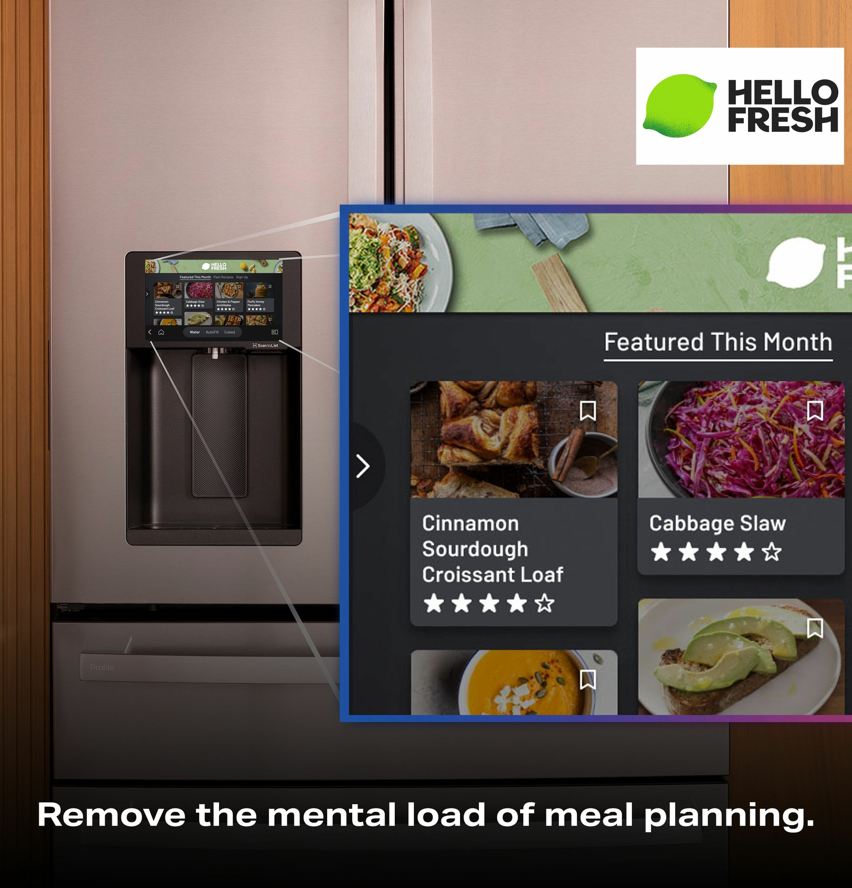

厨房智能硬件 · 竞品动态
GE 为冰箱、烤箱推 OTA：食谱、日历与相册进驻厨房屏幕
11月23日，GE Appliances 宣布为部分 GE Profile、CAFÉ 与 Monogram 联网产品推送软件更新：HelloFresh 菜谱、Google Calendar 日历和 Google Photos 屏保已上线；iHeartRadio 仍标注为即将推出。

这次更新把菜谱浏览、家庭日历和相册放到兼容冰箱与烤箱屏幕上，同时继续改进烤箱摄像头的食物识别。对用户而言，变化不只是多一个显示界面，而是让厨房主设备成为家庭事务与备餐服务的入口。
GE 将其描述为设备购入后持续获得新能力的联网产品策略。功能覆盖范围仍以兼容型号为限；iHeartRadio 尚未上线，视觉识别改善也属于企业公告中的持续更新说明。
GE Appliances Pressroom｜Connected appliance OTA update · 2026-11-23（品牌新闻稿）发布于11月23日，处于本期滚动24小时窗口；可用功能与即将推出项目已区分。